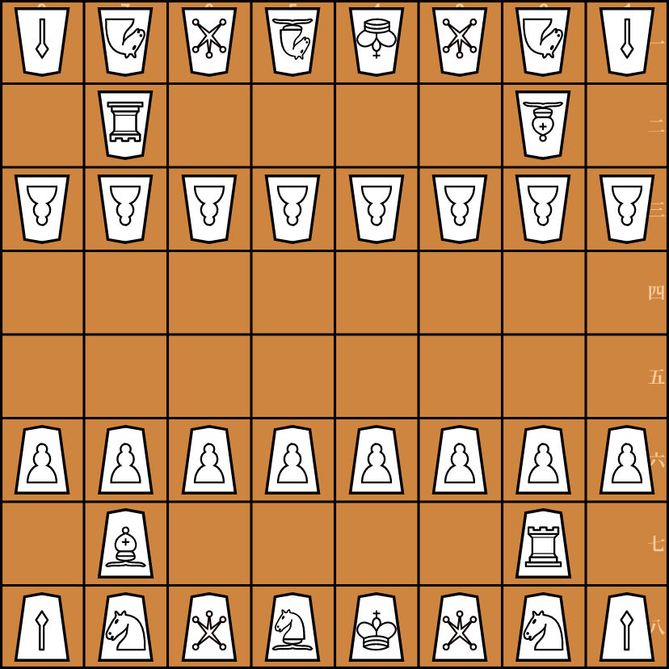

Ōgi
Présentation
Ōgi (王棋, romaji : ōgi) est un jeu de plateau stratégique dérivé du shōgi, la forme japonaise des échecs. Joué sur un plateau de 8x8, cette variante enchanteresse apporte une touche unique avec l'ajout d'une pièce spéciale : la Princesse. Cet élément nouveau confère au jeu un air de romantisme et une plus grande profondeur stratégique.
Position initiale

Pièces
Joueur du Nord
| Nom Chinois | Nom Anglais | Nom Japonais | Abrév. | Caractère Han |
|---|---|---|---|---|
| 角行 | Bishop | 角行 | b | 角 |
| 玉將 | King | 玉将 | k | 玉 |
| 桂馬 | Knight | 桂馬 | n | 桂 |
| 香車 | Lance | 香車 | l | 香 |
| 步兵 | Pawn | 歩兵 | p | 歩 |
| 玉妃 | Princess | 玉妃 | i | 妃 |
| 龍馬 | Promoted Bishop | 龍馬 | +b | 馬 |
| 成桂 | Promoted Knight | 成桂 | +n | 圭 |
| 成香 | Promoted Lance | 成香 | +l | 杏 |
| 成步 | Promoted Pawn | と金 | +p | と |
| 女神 | Promoted Princess | 女神 | +i | 神 |
| 龍王 | Promoted Rook | 龍王 | +r | 龍 |
| 成銀 | Promoted Silver General | 成銀 | +s | 全 |
| 飛車 | Rook | 飛車 | r | 飛 |
| 銀將 | Silver General | 銀将 | s | 銀 |
Joueur du Sud
| Nom Chinois | Nom Anglais | Nom Japonais | Abrév. | Caractère Han |
|---|---|---|---|---|
| 角行 | Bishop | 角行 | B | 角 |
| 王將 | King | 王将 | K | 王 |
| 桂馬 | Knight | 桂馬 | N | 桂 |
| 香車 | Lance | 香車 | L | 香 |
| 步兵 | Pawn | 歩兵 | P | 歩 |
| 王妃 | Princess | 王妃 | I | 妃 |
| 龍馬 | Promoted Bishop | 龍馬 | +B | 馬 |
| 成桂 | Promoted Knight | 成桂 | +N | 圭 |
| 成香 | Promoted Lance | 成香 | +L | 杏 |
| 成步 | Promoted Pawn | と金 | +P | と |
| 女神 | Promoted Princess | 女神 | +I | 神 |
| 龍王 | Promoted Rook | 龍王 | +R | 龍 |
| 成銀 | Promoted Silver General | 成銀 | +S | 全 |
| 飛車 | Rook | 飛車 | R | 飛 |
| 銀將 | Silver General | 銀将 | S | 銀 |
Note :
Au ōgi, la distinction unique par rapport au Shōgi traditionnel réside dans la pièce singulière connue sous le nom de Princesse
.
Cette pièce incarne le cœur stratégique du jeu, combinant les mouvements d'un Cavalier d'échecs et d'un Fou.
Comme le chevalier, la Princesse peut sauter par-dessus les autres pièces, se déplaçant en forme de L, deux cases dans une direction, puis une case perpendiculairement.
Simultanément, elle adopte la capacité du Fou à se déplacer en diagonale à travers n'importe quel nombre de cases inoccupées.
Cette double capacité confère à la Princesse une polyvalence inégalée sur le plateau 8x8, ce qui en fait un élément redoutable et central du jeu.
Règles
Principales différences par rapport au shōgi traditionnel :
- Taille du Plateau : ōgi se joue sur un plateau de 8x8, contrairement au plateau standard de 9x9 utilisé dans le shōgi.
- La Pièce Princesse : Une addition unique dans ōgi est la pièce Princesse, qui combine les mouvements d'un Fou et d'un Cavalier aux échecs, la rendant ainsi une pièce puissante et polyvalente.
- Promotion Obligatoire :
- Au ōgi, la promotion des pièces est obligatoire. Cette règle s'applique à toutes les pièces, y compris la Princesse.
- Lors de sa promotion, la Princesse acquiert les capacités de mouvement du Roi, en plus de ses capacités existantes.
- Échec et Mat avec le Pion ōgi : ōgi permet l'échec et mat en posant un Pion ōgi, une caractéristique unique non présente dans le shōgi traditionnel.
Note : Toutes les autres règles et mécanismes de jeu dans ōgi sont hérités du shōgi traditionnel. Cela inclut le mouvement général des pièces, les méthodes de capture et l'objectif de base du jeu. En conservant ces aspects fondamentaux du shōgi et en intégrant des éléments uniques, ōgi offre une expérience stratégique à la fois familière et rafraîchissante pour les joueurs.
Notes
Tandis que les échecs occidentaux vénèrent la dryade thracienne mythologique Caïssa comme leur divinité, les origines d'ōgi sont enveloppées dans les murmures d'une légende urbaine. On murmure que le jeu est lié à un yokai nommé Komayō, ajoutant des couches de mystère et de folklore. Cependant, il reste incertain si cette histoire est simplement un fruit de l'imagination ou si elle détient une vérité plus profonde, jetant un voile d'enchantement et d'intrigue sur ōgi, rappelant la riche tapisserie de la mythologie japonaise.